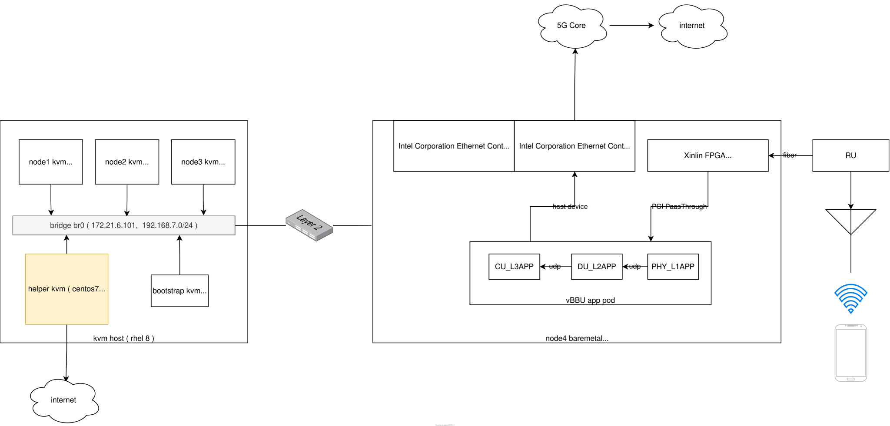
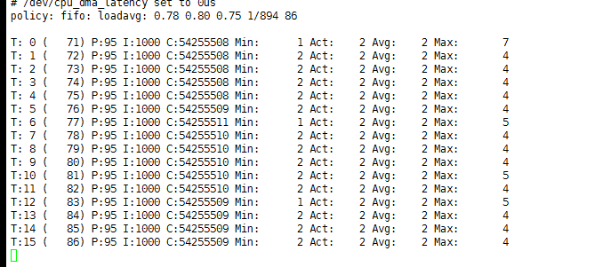
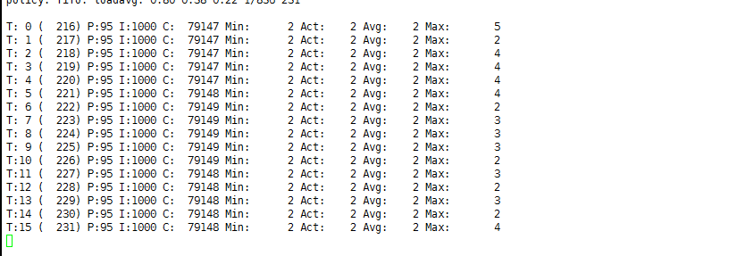

Real-Time Kernel for Openshift4
5G RAN vDU 对操作系统的实时性要求很高， 基本都要求基于实时操作系统搞， openshift4 是一个和操作系统紧密捆绑的paas平台， 内置了实时操作系统， 这个操作系统是使用了 rhel8 的内核， 并使用 ostree 打包的操作系统。
openshift4 可以在node 上启动实时操作系统，有2个办法，一个是通过performance-addon operator
- https://docs.openshift.com/container-platform/4.7/scalability_and_performance/cnf-performance-addon-operator-for-low-latency-nodes.html
另外一个，是直接用machine config的办法搞
- https://docs.openshift.com/container-platform/4.7/post_installation_configuration/machine-configuration-tasks.html#nodes-nodes-rtkernel-arguments_post-install-machine-configuration-tasks
本次试验部署架构图

视频讲解:
操作系统上怎么做
用实时操作系统，就是为了性能，那么如果我们是一台物理机，不考虑容器平台，我们应该怎么配置，让这个实时操作系统性能最大化呢？
一般来说，有2个通用的配置
- 对实时操作系统，并进行系统调优配置。
- 物理机bios进行配置，关闭超线程，关闭irq balance，关闭cpu c-state 等节电功能。
对于第一个，实时操作系统的配置，参考这里
- install kernel-rt
- install rt-test
cat /etc/tuned/realtime-variables.conf
# isolated_cores=1-30
# isolate_managed_irq=Y
tuned-adm profile realtime
reboot
swapoff -a
systemctl stop irqbalance对于第二个，物理机上bios配置，要找服务器的厂商文档，查看官方的low latency配置文档。 比如这里
| System Setup Screen | Setting | Default | Recommended Alternative for Low- Latency Environments |
|---|---|---|---|
| Processor Settings | Logical Processor | Enabled | Disabled |
| Processor Settings | Turbo Mode | Enabled | Disabled2 |
| Processor Settings | C-States | Enabled | Disabled |
| Processor Settings | C1E | Enabled | Disabled |
| Power Management | Power Management | Active Power Controller | Maximum Performance |
先使用performance addon operator，这个是官方推荐的方法。
performance addon operator 是openshift4里面的一个operator，他的作用是，让用户进行简单的yaml配置，然后operator帮助客户进行复杂的kernel parameter, kubelet, tuned配置。
# on 104, create a new worker node
export KVM_DIRECTORY=/data/kvm
mkdir -p ${KVM_DIRECTORY}
cd ${KVM_DIRECTORY}
scp root@172.21.6.11:/data/install/{*worker-0}.iso ${KVM_DIRECTORY}/
virt-install --name=ocp4-worker0 --vcpus=4 --ram=8192 \
--disk path=/data/kvm/ocp4-worker0.qcow2,bus=virtio,size=120 \
--os-variant rhel8.0 --network bridge=br0,model=virtio \
--graphics vnc,listen=127.0.0.1,port=59005 \
--boot menu=on --cdrom ${KVM_DIRECTORY}/rhcos_install-worker-0.iso
# go back to helper
oc get csr
oc get csr -ojson | jq -r '.items[] | select(.status == {} ) | .metadata.name' | xargs oc adm certificate approve
# install performance addon operator following offical document
# https://docs.openshift.com/container-platform/4.7/scalability_and_performance/cnf-performance-addon-operator-for-low-latency-nodes.html
cat << EOF > /data/install/worker-rt.yaml
apiVersion: machineconfiguration.openshift.io/v1
kind: MachineConfigPool
metadata:
name: worker-rt
labels:
machineconfiguration.openshift.io/role: worker-rt
spec:
machineConfigSelector:
matchExpressions:
- {key: machineconfiguration.openshift.io/role, operator: In, values: [worker,worker-rt]}
nodeSelector:
matchLabels:
node-role.kubernetes.io/worker-rt: ""
EOF
oc create -f /data/install/worker-rt.yaml
oc label MachineConfigPool/worker-rt machineconfiguration.openshift.io/role=worker-rt
# to restore
oc delete -f /data/install/worker-rt.yaml
oc label node worker-0 node-role.kubernetes.io/worker-rt=""
# 以下的配置，是保留了0-1核给系统，剩下的2-3核给应用，实际物理机上，一般是2-19给应用。
cat << EOF > /data/install/performance.yaml
apiVersion: performance.openshift.io/v2
kind: PerformanceProfile
metadata:
name: example-performanceprofile
spec:
additionalKernelArgs:
- selinux=0
- intel_iommu=on
globallyDisableIrqLoadBalancing: true
cpu:
isolated: "2-3"
reserved: "0-1"
hugepages:
defaultHugepagesSize: "1G"
pages:
- size: "1G"
count: 2
node: 0
realTimeKernel:
enabled: true
numa:
topologyPolicy: "single-numa-node"
nodeSelector:
node-role.kubernetes.io/worker-rt: ""
EOF
oc create -f /data/install/performance.yaml
# restore
oc delete -f /data/install/performance.yaml
# check the result
ssh core@worker-0
uname -a
# Linux worker-0 4.18.0-240.22.1.rt7.77.el8_3.x86_64 #1 SMP PREEMPT_RT Fri Mar 26 18:44:48 EDT 2021 x86_64 x86_64 x86_64 GNU/Linuxremove worker-0
oc delete node worker-0
virsh destroy ocp4-worker0
virsh undefine ocp4-worker0 try with machine config with tunned, this is DIY if you like :)
machine config的办法，特点是定制化程度很高，如果客户之前用rt-kernel的操作系统，调优过应用，那么用machine config的方法，能够直接把客户之前的调优参数于应用过来，就不用纠结各种调优的参数，在openshift4上面，应该怎么配置进去了。
you can use machine config dirctly, this can give you full customization capabilities. If you customer already fine-tune kernel parameter on rt-kernel, you can use their kernel parameter directly on openshift4 without try the parameters by yourself.
# 打开节点的real time kernel
# cat << EOF > /data/install/99-worker-realtime.yaml
# apiVersion: machineconfiguration.openshift.io/v1
# kind: MachineConfig
# metadata:
# labels:
# machineconfiguration.openshift.io/role: "worker-rt"
# name: 99-worker-realtime
# spec:
# kernelType: realtime
# EOF
# oc create -f /data/install/99-worker-realtime.yaml
# 配置kernel启动参数，每个参数一行
# http://abcdxyzk.github.io/blog/2015/02/11/kernel-base-param/
# no_timer_check clocksource=tsc tsc=perfect intel_pstate=disable selinux=0 enforcing=0 nmi_watchdog=0 softlockup_panic=0 isolcpus=2-19 nohz_full=2-19 idle=poll default_hugepagesz=1G hugepagesz=1G hugepages=32 skew_tick=1 rcu_nocbs=2-19 kthread_cpus=0-1 irqaffinity=0-1 rcu_nocb_poll iommu=pt intel_iommu=on
cat << EOF > /data/install/05-worker-kernelarg-realtime.yaml
apiVersion: machineconfiguration.openshift.io/v1
kind: MachineConfig
metadata:
labels:
machineconfiguration.openshift.io/role: worker-rt
name: 05-worker-kernelarg-realtime
spec:
config:
ignition:
version: 3.1.0
kernelArguments:
- no_timer_check # 禁止运行内核中时钟IRQ源缺陷检测代码。主要用于解决某些AMD平台的CPU占用过高以及时钟过快的故障。
- clocksource=tsc # clocksource={jiffies|acpi_pm|hpet|tsc} tsc TSC(Time Stamp Counter)的主体是位于CPU里面的一个64位TSC寄存器，与传统的以中断形式存在的周期性时钟不同，TSC是以计数器形式存在的单步递增性时钟，两者的区别在于，周期性时钟是通过周期性触发中断达到计时目的，如心跳一般。而单步递增时钟则不发送中断，取而代之的是由软件自己在需要的时候去主动读取TSC寄存器的值来获得时间。TSC的精度更高并且速度更快，但仅能在较新的CPU(Sandy Bridge之后)上使用。
- tsc=perfect
- intel_pstate=disable # intel_pstate驱动支持现代Intel处理器的温控。 intel_pstate=disable选项可以强制使用传统遗留的CPU驱动acpi_cpufreq
- selinux=0
- enforcing=0
- nmi_watchdog=0 # 配置nmi_watchdog(不可屏蔽中断看门狗) 0 表示关闭看门狗；
- softlockup_panic=0 # 是否在检测到软死锁(soft-lockup)的时候让内核panic
- isolcpus=2-19 # 将列表中的CPU从内核SMP平衡和调度算法中剔除。 提出后并不是绝对不能再使用该CPU的，操作系统仍然可以强制指定特定的进程使用哪个CPU(可以通过taskset来做到)。该参数的目的主要是用于实现特定cpu只运行特定进程的目的。
- nohz_full=2-19 #在 16 核的系统中，设定 nohz_full=1-15 可以在 1 到 15 内核中启用动态无时钟内核性能，并将所有的计时移动至唯一未设定的内核中（0 内核）, [注意](1)"boot CPU"(通常都是"0"号CPU)会无条件的从列表中剔除。(2)这里列出的CPU编号必须也要同时列进"rcu_nocbs=..."参数中。
- idle=poll # 对CPU进入休眠状态的额外设置。poll 从根本上禁用休眠功能(也就是禁止进入C-states状态)，可以略微提升一些CPU性能，但是却需要多消耗许多电力，得不偿失。不推荐使用。
- default_hugepagesz=1G
- hugepagesz=1G
- hugepages=32
- skew_tick=1 # Offset the periodic timer tick per cpu to mitigate xtime_lock contention on larger systems, and/or RCU lock contention on all systems with CONFIG_MAXSMP set. Note: increases power consumption, thus should only be enabled if running jitter sensitive (HPC/RT) workloads.
- rcu_nocbs=2-19 # 指定哪些CPU是No-CB CPU
- kthread_cpus=0-1
- irqaffinity=0-1 # 通过内核参数irqaffinity==[cpu列表],设置linux中断的亲和性，设置后，默认由这些cpu核来处理非CPU绑定中断。避免linux中断影响cpu2、cpu3上的实时应用，将linux中断指定到cpu0、cpu1处理。
- rcu_nocb_poll # 减少了需要从卸载cpu执行唤醒操作。避免了rcuo kthreads线程显式的唤醒。另一方面这会增加耗电量
- iommu=pt
- intel_iommu=on
kernelType: realtime
EOF
oc create -f /data/install/05-worker-kernelarg-realtime.yaml
# 一般都需要 cpu/numa 绑核，这个在 kubelet 的配置里面做
cat << EOF > /data/install/cpumanager-kubeletconfig.yaml
apiVersion: machineconfiguration.openshift.io/v1
kind: KubeletConfig
metadata:
name: cpumanager-enabled
spec:
machineConfigPoolSelector:
matchLabels:
custom-kubelet: cpumanager-enabled
kubeletConfig:
cpuManagerPolicy: static
cpuManagerReconcilePeriod: 5s
topologyManagerPolicy: single-numa-node
reservedSystemCPUs: "0,1"
EOF
oc create -f /data/install/cpumanager-kubeletconfig.yaml
# 以下如果在 bios 里面关掉了，就不用做了。
# if irqbalance disabled in bios, you can skip below step.
# cat << EOF > /data/install/99-custom-disable-irqbalance-worker.yaml
# apiVersion: machineconfiguration.openshift.io/v1
# kind: MachineConfig
# metadata:
# labels:
# machineconfiguration.openshift.io/role: worker-rt
# name: 99-custom-disable-irqbalance-worker
# spec:
# config:
# ignition:
# version: 2.2.0
# systemd:
# units:
# - enabled: false
# mask: true
# name: irqbalance.service
# EOF
# oc create -f /data/install/99-custom-disable-irqbalance-worker.yaml
# 我们基于performace addon ， 改一下他的例子， 这次我们基于 realtime
cat << EOF > /data/install/tuned.yaml
apiVersion: tuned.openshift.io/v1
kind: Tuned
metadata:
name: wzh-realtime
namespace: openshift-cluster-node-tuning-operator
spec:
profile:
- data: |
[main]
summary=wzh version for realtime, 5G RAN
include=openshift-node,realtime
# Different values will override the original values in parent profiles.
[variables]
# isolated_cores take a list of ranges; e.g. isolated_cores=2,4-7
isolated_cores=2-19
isolate_managed_irq=Y
[service]
service.stalld=start,enable
name: wzh-realtime
recommend:
- machineConfigLabels:
machineconfiguration.openshift.io/role: worker-rt
priority: 20
profile: wzh-realtime
EOF
oc create -f /data/install/tuned.yaml
# to restore
oc delete -f /data/install/tuned.yaml
# https://zhuanlan.zhihu.com/p/336381111
# yum install rt-test
# 在测试现场，经过整个晚上的测试，可以看到系统的实时性非常好
# 目标结果，最大不应超过 6μs
cyclictest -m -p95 -d0 -a 2-17 -t 16
try to deploy a vDU pod, using yaml
---
apiVersion: "k8s.cni.cncf.io/v1"
kind: NetworkAttachmentDefinition
metadata:
name: host-device-du
spec:
config: '{
"cniVersion": "0.3.0",
"type": "host-device",
"device": "ens81f1np1",
"ipam": {
"type": "host-local",
"subnet": "192.168.12.0/24",
"rangeStart": "192.168.12.105",
"rangeEnd": "192.168.12.105",
"routes": [{
"dst": "0.0.0.0/0"
}],
"gateway": "192.168.12.1"
}
}'
---
apiVersion: apps/v1
kind: Deployment
metadata:
name: du-deployment1
labels:
app: du-deployment1
spec:
replicas: 1
selector:
matchLabels:
app: du-pod1
template:
metadata:
labels:
app: du-pod1
annotations:
k8s.v1.cni.cncf.io/networks: '[
{ "name": "host-device-du",
"interface": "net1" }
]'
spec:
containers:
- name: du-container1
image: "registry.ocp4.redhat.ren:5443/ocp4/centos:7.6.1810"
imagePullPolicy: IfNotPresent
tty: true
stdin: true
env:
- name: duNetProviderDriver
value: "host-netdevice"
command:
- sleep
- infinity
securityContext:
privileged: true
capabilities:
add:
- CAP_SYS_ADMIN
volumeMounts:
- mountPath: /hugepages
name: hugepage
- name: lib-modules
mountPath: /lib/modules
- name: src
mountPath: /usr/src
- name: dev
mountPath: /dev
- name: cache-volume
mountPath: /dev/shm
resources:
requests:
cpu: 16
memory: 48Gi
hugepages-1Gi: 8Gi
limits:
cpu: 16
memory: 48Gi
hugepages-1Gi: 8Gi
volumes:
- name: hugepage
emptyDir:
medium: HugePages
- name: lib-modules
hostPath:
path: /lib/modules
- name: src
hostPath:
path: /usr/src
- name: dev
hostPath:
path: "/dev"
- name: cache-volume
emptyDir:
medium: Memory
sizeLimit: 16Gi
nodeSelector:
node-role.kubernetes.io/worker-rt: ""research
oc get Tuned -n openshift-cluster-node-tuning-operator
# NAME AGE
# default 18d
# openshift-node-performance-example-performanceprofile 12d
# rendered 18d
oc get Tuned/default -o yaml -n openshift-cluster-node-tuning-operatorapiVersion: tuned.openshift.io/v1
kind: Tuned
metadata:
creationTimestamp: "2021-05-05T16:09:36Z"
generation: 1
name: default
namespace: openshift-cluster-node-tuning-operator
resourceVersion: "6067"
selfLink: /apis/tuned.openshift.io/v1/namespaces/openshift-cluster-node-tuning-operator/tuneds/default
uid: 205c01c5-2609-4f2f-b676-ad746ea3c9f3
spec:
profile:
- data: |
[main]
summary=Optimize systems running OpenShift (parent profile)
include=${f:virt_check:virtual-guest:throughput-performance}
[selinux]
avc_cache_threshold=8192
[net]
nf_conntrack_hashsize=131072
[sysctl]
net.ipv4.ip_forward=1
kernel.pid_max=>4194304
net.netfilter.nf_conntrack_max=1048576
net.ipv4.conf.all.arp_announce=2
net.ipv4.neigh.default.gc_thresh1=8192
net.ipv4.neigh.default.gc_thresh2=32768
net.ipv4.neigh.default.gc_thresh3=65536
net.ipv6.neigh.default.gc_thresh1=8192
net.ipv6.neigh.default.gc_thresh2=32768
net.ipv6.neigh.default.gc_thresh3=65536
vm.max_map_count=262144
[sysfs]
/sys/module/nvme_core/parameters/io_timeout=4294967295
/sys/module/nvme_core/parameters/max_retries=10
name: openshift
- data: |
[main]
summary=Optimize systems running OpenShift control plane
include=openshift
[sysctl]
# ktune sysctl settings, maximizing i/o throughput
#
# Minimal preemption granularity for CPU-bound tasks:
# (default: 1 msec# (1 + ilog(ncpus)), units: nanoseconds)
kernel.sched_min_granularity_ns=10000000
# The total time the scheduler will consider a migrated process
# "cache hot" and thus less likely to be re-migrated
# (system default is 500000, i.e. 0.5 ms)
kernel.sched_migration_cost_ns=5000000
# SCHED_OTHER wake-up granularity.
#
# Preemption granularity when tasks wake up. Lower the value to
# improve wake-up latency and throughput for latency critical tasks.
kernel.sched_wakeup_granularity_ns=4000000
name: openshift-control-plane
- data: |
[main]
summary=Optimize systems running OpenShift nodes
include=openshift
[sysctl]
net.ipv4.tcp_fastopen=3
fs.inotify.max_user_watches=65536
fs.inotify.max_user_instances=8192
name: openshift-node
recommend:
- match:
- label: node-role.kubernetes.io/master
- label: node-role.kubernetes.io/infra
operand:
debug: false
priority: 30
profile: openshift-control-plane
- operand:
debug: false
priority: 40
profile: openshift-node
status: {}oc get Tuned/openshift-node-performance-example-performanceprofile -o yaml -n openshift-cluster-node-tuning-operatorapiVersion: tuned.openshift.io/v1
kind: Tuned
metadata:
name: openshift-node-performance-example-performanceprofile
namespace: openshift-cluster-node-tuning-operator
spec:
profile:
- data: "[main]\nsummary=Openshift node optimized for deterministic performance at the cost of increased power consumption, focused on low latency network performance. Based on Tuned 2.11 and Cluster node tuning (oc 4.5)\ninclude=openshift-node,cpu-partitioning\n\n# Inheritance of base profiles legend:\n# cpu-partitioning -> network-latency -> latency-performance\n# https://github.com/redhat-performance/tuned/blob/master/profiles/latency-performance/tuned.conf\n# https://github.com/redhat-performance/tuned/blob/master/profiles/network-latency/tuned.conf\n# https://github.com/redhat-performance/tuned/blob/master/profiles/cpu-partitioning/tuned.conf\n\n# All values are mapped with a comment where a parent profile contains them.\n# Different values will override the original values in parent profiles.\n\n[variables]\n# isolated_cores take a list of ranges; e.g. isolated_cores=2,4-7\n\nisolated_cores=2-3 \n\n\nnot_isolated_cores_expanded=${f:cpulist_invert:${isolated_cores_expanded}}\n\n[cpu]\nforce_latency=cstate.id:1|3 # latency-performance (override)\ngovernor=performance # latency-performance \nenergy_perf_bias=performance # latency-performance \nmin_perf_pct=100 # latency-performance \n\n[service]\nservice.stalld=start,enable\n\n[vm]\ntransparent_hugepages=never # network-latency\n\n\n[irqbalance]\n# Override the value set by cpu-partitioning with an empty one\nbanned_cpus=\"\"\n\n\n[scheduler]\ngroup.ksoftirqd=0:f:11:*:ksoftirqd.*\ngroup.rcuc=0:f:11:*:rcuc.*\n\ndefault_irq_smp_affinity = ignore\n\n\n[sysctl]\nkernel.hung_task_timeout_secs = 600 # cpu-partitioning #realtime\nkernel.nmi_watchdog = 0 # cpu-partitioning #realtime\nkernel.sched_rt_runtime_us = -1 # realtime \nkernel.timer_migration = 0 # cpu-partitioning (= 1) #realtime (= 0)\nkernel.numa_balancing=0 # network-latency\nnet.core.busy_read=50 # network-latency\nnet.core.busy_poll=50 # network-latency\nnet.ipv4.tcp_fastopen=3 # network-latency\nvm.stat_interval = 10 # cpu-partitioning #realtime\n\n# ktune sysctl settings for rhel6 servers, maximizing i/o throughput\n#\n# Minimal preemption granularity for CPU-bound tasks:\n# (default: 1 msec# (1 + ilog(ncpus)), units: nanoseconds)\nkernel.sched_min_granularity_ns=10000000 # latency-performance\n\n# If a workload mostly uses anonymous memory and it hits this limit, the entire\n# working set is buffered for I/O, and any more write buffering would require\n# swapping, so it's time to throttle writes until I/O can catch up. Workloads\n# that mostly use file mappings may be able to use even higher values.\n#\n# The generator of dirty data starts writeback at this percentage (system default\n# is 20%)\nvm.dirty_ratio=10 # latency-performance\n\n# Start background writeback (via writeback threads) at this percentage (system\n# default is 10%)\nvm.dirty_background_ratio=3 # latency-performance\n\n# The swappiness parameter controls the tendency of the kernel to move\n# processes out of physical memory and onto the swap disk.\n# 0 tells the kernel to avoid swapping processes out of physical memory\n# for as long as possible\n# 100 tells the kernel to aggressively swap processes out of physical memory\n# and move them to swap cache\nvm.swappiness=10 # latency-performance\n\n# The total time the scheduler will consider a migrated process\n# \"cache hot\" and thus less likely to be re-migrated\n# (system default is 500000, i.e. 0.5 ms)\nkernel.sched_migration_cost_ns=5000000 # latency-performance\n\n[selinux]\navc_cache_threshold=8192 # Custom (atomic host)\n\n[net]\nnf_conntrack_hashsize=131072 # Custom (atomic host)\n\n[bootloader]\n# set empty values to disable RHEL initrd setting in cpu-partitioning \ninitrd_remove_dir= \ninitrd_dst_img=\ninitrd_add_dir=\n# overrides cpu-partitioning cmdline\ncmdline_cpu_part=+nohz=on rcu_nocbs=${isolated_cores} tuned.non_isolcpus=${not_isolated_cpumask} intel_pstate=disable nosoftlockup\n\ncmdline_realtime=+tsc=nowatchdog intel_iommu=on iommu=pt isolcpus=managed_irq,${isolated_cores} systemd.cpu_affinity=${not_isolated_cores_expanded}\n\ncmdline_hugepages=+ default_hugepagesz=1G \ncmdline_additionalArg=+\n"
name: openshift-node-performance-example-performanceprofile
recommend:
- machineConfigLabels:
machineconfiguration.openshift.io/role: worker-rt
priority: 20
profile: openshift-node-performance-example-performanceprofile
status: {}apiVersion: tuned.openshift.io/v1
kind: Tuned
metadata:
name: openshift-node-performance-example-performanceprofile
namespace: openshift-cluster-node-tuning-operator
spec:
profile:
- data: |
[main]
summary=Openshift node optimized for deterministic performance at the cost of increased power consumption, focused on low latency network performance. Based on Tuned 2.11 and Cluster node tuning (oc 4.5)
include=openshift-node,cpu-partitioning
# Inheritance of base profiles legend:
# cpu-partitioning -> network-latency -> latency-performance
# https://github.com/redhat-performance/tuned/blob/master/profiles/latency-performance/tuned.conf
# https://github.com/redhat-performance/tuned/blob/master/profiles/network-latency/tuned.conf
# https://github.com/redhat-performance/tuned/blob/master/profiles/cpu-partitioning/tuned.conf
# All values are mapped with a comment where a parent profile contains them.
# Different values will override the original values in parent profiles.
[variables]
# isolated_cores take a list of ranges; e.g. isolated_cores=2,4-7
isolated_cores=2-3
not_isolated_cores_expanded=
[cpu]
force_latency=cstate.id:1|3 # latency-performance (override)
governor=performance # latency-performance
energy_perf_bias=performance # latency-performance
min_perf_pct=100 # latency-performance
[service]
service.stalld=start,enable
[vm]
transparent_hugepages=never # network-latency
[irqbalance]
# Override the value set by cpu-partitioning with an empty one
banned_cpus=""
[scheduler]
group.ksoftirqd=0:f:11:*:ksoftirqd.*
group.rcuc=0:f:11:*:rcuc.*
default_irq_smp_affinity = ignore
[sysctl]
kernel.hung_task_timeout_secs = 600 # cpu-partitioning #realtime
kernel.nmi_watchdog = 0 # cpu-partitioning #realtime
kernel.sched_rt_runtime_us = -1 # realtime
kernel.timer_migration = 0 # cpu-partitioning (= 1) #realtime (= 0)
kernel.numa_balancing=0 # network-latency
net.core.busy_read=50 # network-latency
net.core.busy_poll=50 # network-latency
net.ipv4.tcp_fastopen=3 # network-latency
vm.stat_interval = 10 # cpu-partitioning #realtime
# ktune sysctl settings for rhel6 servers, maximizing i/o throughput
#
# Minimal preemption granularity for CPU-bound tasks:
# (default: 1 msec# (1 + ilog(ncpus)), units: nanoseconds)
kernel.sched_min_granularity_ns=10000000 # latency-performance
# If a workload mostly uses anonymous memory and it hits this limit, the entire
# working set is buffered for I/O, and any more write buffering would require
# swapping, so it's time to throttle writes until I/O can catch up. Workloads
# that mostly use file mappings may be able to use even higher values.
#
# The generator of dirty data starts writeback at this percentage (system default
# is 20%)
vm.dirty_ratio=10 # latency-performance
# Start background writeback (via writeback threads) at this percentage (system
# default is 10%)
vm.dirty_background_ratio=3 # latency-performance
# The swappiness parameter controls the tendency of the kernel to move
# processes out of physical memory and onto the swap disk.
# 0 tells the kernel to avoid swapping processes out of physical memory
# for as long as possible
# 100 tells the kernel to aggressively swap processes out of physical memory
# and move them to swap cache
vm.swappiness=10 # latency-performance
# The total time the scheduler will consider a migrated process
# "cache hot" and thus less likely to be re-migrated
# (system default is 500000, i.e. 0.5 ms)
kernel.sched_migration_cost_ns=5000000 # latency-performance
[selinux]
avc_cache_threshold=8192 # Custom (atomic host)
[net]
nf_conntrack_hashsize=131072 # Custom (atomic host)
[bootloader]
# set empty values to disable RHEL initrd setting in cpu-partitioning
initrd_remove_dir=
initrd_dst_img=
initrd_add_dir=
# overrides cpu-partitioning cmdline
cmdline_cpu_part=+nohz=on rcu_nocbs= tuned.non_isolcpus= intel_pstate=disable nosoftlockup
cmdline_realtime=+tsc=nowatchdog intel_iommu=on iommu=pt isolcpus=managed_irq, systemd.cpu_affinity=
cmdline_hugepages=+ default_hugepagesz=1G
cmdline_additionalArg=+
name: openshift-node-performance-example-performanceprofile
recommend:
- machineConfigLabels:
machineconfiguration.openshift.io/role: worker-rt
priority: 20
profile: openshift-node-performance-example-performanceprofile# tuned 的配置，如果有些在bios里面做了，那么也可以忽略。我们基于performace addon ， 改一下他的例子.
cat << EOF > /data/install/tuned.yaml
apiVersion: tuned.openshift.io/v1
kind: Tuned
metadata:
name: openshift-node-wzh-performance-profile
namespace: openshift-cluster-node-tuning-operator
spec:
profile:
- data: |
[main]
summary=Openshift node optimized for deterministic performance at the cost of increased power consumption, focused on low latency network performance. Based on Tuned 2.11 and Cluster node tuning (oc 4.5)
include=openshift-node,cpu-partitioning
# Inheritance of base profiles legend:
# cpu-partitioning -> network-latency -> latency-performance
# https://github.com/redhat-performance/tuned/blob/master/profiles/latency-performance/tuned.conf
# https://github.com/redhat-performance/tuned/blob/master/profiles/network-latency/tuned.conf
# https://github.com/redhat-performance/tuned/blob/master/profiles/cpu-partitioning/tuned.conf
# All values are mapped with a comment where a parent profile contains them.
# Different values will override the original values in parent profiles.
[variables]
# isolated_cores take a list of ranges; e.g. isolated_cores=2,4-7
isolated_cores=2-19
isolate_managed_irq=Y
not_isolated_cores_expanded=
[cpu]
# force_latency=cstate.id:1|3 # latency-performance (override)
governor=performance # latency-performance
energy_perf_bias=performance # latency-performance
min_perf_pct=100 # latency-performance
[service]
service.stalld=start,enable
[vm]
transparent_hugepages=never # network-latency
[irqbalance]
# Override the value set by cpu-partitioning with an empty one
banned_cpus=""
[scheduler]
group.ksoftirqd=0:f:11:*:ksoftirqd.*
group.rcuc=0:f:11:*:rcuc.*
default_irq_smp_affinity = ignore
[sysctl]
kernel.hung_task_timeout_secs = 600 # cpu-partitioning #realtime
kernel.nmi_watchdog = 0 # cpu-partitioning #realtime
kernel.sched_rt_runtime_us = -1 # realtime
kernel.timer_migration = 0 # cpu-partitioning (= 1) #realtime (= 0)
kernel.numa_balancing=0 # network-latency
net.core.busy_read=50 # network-latency
net.core.busy_poll=50 # network-latency
net.ipv4.tcp_fastopen=3 # network-latency
vm.stat_interval = 10 # cpu-partitioning #realtime
# ktune sysctl settings for rhel6 servers, maximizing i/o throughput
#
# Minimal preemption granularity for CPU-bound tasks:
# (default: 1 msec# (1 + ilog(ncpus)), units: nanoseconds)
kernel.sched_min_granularity_ns=10000000 # latency-performance
# If a workload mostly uses anonymous memory and it hits this limit, the entire
# working set is buffered for I/O, and any more write buffering would require
# swapping, so it's time to throttle writes until I/O can catch up. Workloads
# that mostly use file mappings may be able to use even higher values.
#
# The generator of dirty data starts writeback at this percentage (system default
# is 20%)
vm.dirty_ratio=10 # latency-performance
# Start background writeback (via writeback threads) at this percentage (system
# default is 10%)
vm.dirty_background_ratio=3 # latency-performance
# The swappiness parameter controls the tendency of the kernel to move
# processes out of physical memory and onto the swap disk.
# 0 tells the kernel to avoid swapping processes out of physical memory
# for as long as possible
# 100 tells the kernel to aggressively swap processes out of physical memory
# and move them to swap cache
vm.swappiness=10 # latency-performance
# The total time the scheduler will consider a migrated process
# "cache hot" and thus less likely to be re-migrated
# (system default is 500000, i.e. 0.5 ms)
kernel.sched_migration_cost_ns=5000000 # latency-performance
[selinux]
avc_cache_threshold=8192 # Custom (atomic host)
[net]
nf_conntrack_hashsize=131072 # Custom (atomic host)
[bootloader]
# set empty values to disable RHEL initrd setting in cpu-partitioning
initrd_remove_dir=
initrd_dst_img=
initrd_add_dir=
# overrides cpu-partitioning cmdline
cmdline_cpu_part=+nohz=on rcu_nocbs= tuned.non_isolcpus= intel_pstate=disable nosoftlockup
cmdline_realtime=+tsc=nowatchdog intel_iommu=on iommu=pt isolcpus=managed_irq, systemd.cpu_affinity=
cmdline_hugepages=+ default_hugepagesz=1G
cmdline_additionalArg=+
name: openshift-node-wzh-performance-profile
recommend:
- machineConfigLabels:
machineconfiguration.openshift.io/role: worker-rt
priority: 20
profile: openshift-node-wzh-performance-profile
EOF
oc create -f /data/install/tuned.yaml
# 用了performance example的profile 效果很好
cyclictest -m -p95 -d0 -a 2-17 -t 16
example config
oc get mcNAME GENERATEDBYCONTROLLER IGNITIONVERSION AGE
00-master 791d1cc2626d1e4e5da59f15c1a6166fd398aef8 3.1.0 62d
00-worker 791d1cc2626d1e4e5da59f15c1a6166fd398aef8 3.1.0 62d
01-master-container-runtime 791d1cc2626d1e4e5da59f15c1a6166fd398aef8 3.1.0 62d
01-master-kubelet 791d1cc2626d1e4e5da59f15c1a6166fd398aef8 3.1.0 62d
01-worker-container-runtime 791d1cc2626d1e4e5da59f15c1a6166fd398aef8 3.1.0 62d
01-worker-kubelet 791d1cc2626d1e4e5da59f15c1a6166fd398aef8 3.1.0 62d
05-worker-kernelarg-rtran 3.1.0 62d
50-nto-worker-rt 3.1.0 58d
99-master-generated-registries 791d1cc2626d1e4e5da59f15c1a6166fd398aef8 3.1.0 62d
99-master-ssh 3.1.0 62d
99-worker-generated-registries 791d1cc2626d1e4e5da59f15c1a6166fd398aef8 3.1.0 62d
99-worker-realtime 62d
99-worker-rt-generated-kubelet 791d1cc2626d1e4e5da59f15c1a6166fd398aef8 3.1.0 58d
99-worker-ssh 3.1.0 62d
load-sctp-module 3.1.0 6d9h
rendered-master-0629f16bcba29a60e894f3d9e14e47b9 791d1cc2626d1e4e5da59f15c1a6166fd398aef8 3.1.0 62d
rendered-worker-7497d1b2e86631a4f390a6eba0aef74f 791d1cc2626d1e4e5da59f15c1a6166fd398aef8 3.1.0 62d
rendered-worker-rt-1e40da418635be6c6b81ebc33a1f0640 791d1cc2626d1e4e5da59f15c1a6166fd398aef8 3.1.0 62d
rendered-worker-rt-35d27df9ed0ff75a6a192700313a88f8 791d1cc2626d1e4e5da59f15c1a6166fd398aef8 3.1.0 58d
rendered-worker-rt-3e87a41fe1e455977a4a972f8d4258aa 791d1cc2626d1e4e5da59f15c1a6166fd398aef8 3.1.0 58d
rendered-worker-rt-4ba64193fdbace8fc101541335067ad4 791d1cc2626d1e4e5da59f15c1a6166fd398aef8 3.1.0 62d
rendered-worker-rt-7497d1b2e86631a4f390a6eba0aef74f 791d1cc2626d1e4e5da59f15c1a6166fd398aef8 3.1.0 62d
rendered-worker-rt-9cf8ebbc1c0cf88bb3a9716b6d66e60e 791d1cc2626d1e4e5da59f15c1a6166fd398aef8 3.1.0 58d
rendered-worker-rt-bb3c16a689e7797fb4c828cec877c9ed 791d1cc2626d1e4e5da59f15c1a6166fd398aef8 3.1.0 58d
rendered-worker-rt-ea53e6c4fc58b5f9f505ebed3cb32345 791d1cc2626d1e4e5da59f15c1a6166fd398aef8 3.1.0 58d
rendered-worker-rt-fd13902df04099f149d7653da3552f5d 791d1cc2626d1e4e5da59f15c1a6166fd398aef8 3.1.0 6d9hoc get mc/05-worker-kernelarg-rtran -o json | jq "del(.metadata.managedFields, .metadata.uid, .metadata.selfLink, .metadata.resourceVersion, .metadata.generation, .metadata.creationTimestamp)"{
"apiVersion": "machineconfiguration.openshift.io/v1",
"kind": "MachineConfig",
"metadata": {
"labels": {
"machineconfiguration.openshift.io/role": "worker-rt"
},
"name": "05-worker-kernelarg-rtran"
},
"spec": {
"config": {
"ignition": {
"version": "3.1.0"
}
},
"kernelArguments": [
"no_timer_check",
"clocksource=tsc",
"tsc=perfect",
"selinux=0",
"enforcing=0",
"nmi_watchdog=0",
"softlockup_panic=0",
"isolcpus=2-19",
"nohz_full=2-19",
"idle=poll",
"default_hugepagesz=1G",
"hugepagesz=1G",
"hugepages=16",
"skew_tick=1",
"rcu_nocbs=2-19",
"kthread_cpus=0-1",
"irqaffinity=0-1",
"rcu_nocb_poll",
"iommu=pt",
"intel_iommu=on"
]
}
}oc get mc/50-nto-worker-rt -o json | jq "del(.metadata.managedFields, .metadata.uid, .metadata.selfLink, .metadata.resourceVersion, .metadata.generation, .metadata.creationTimestamp)"{
"apiVersion": "machineconfiguration.openshift.io/v1",
"kind": "MachineConfig",
"metadata": {
"annotations": {
"tuned.openshift.io/generated-by-controller-version": "v4.6.0-202104221811.p0-0-gfdb7aec-dirty"
},
"labels": {
"machineconfiguration.openshift.io/role": "worker-rt"
},
"name": "50-nto-worker-rt"
},
"spec": {
"config": {
"ignition": {
"config": {
"replace": {
"verification": {}
}
},
"proxy": {},
"security": {
"tls": {}
},
"timeouts": {},
"version": "3.1.0"
},
"passwd": {},
"storage": {},
"systemd": {}
},
"extensions": null,
"fips": false,
"kernelArguments": [
"skew_tick=1",
"isolcpus=managed_irq,domain,2-19",
"intel_pstate=disable",
"nosoftlockup",
"tsc=nowatchdog"
],
"kernelType": "",
"osImageURL": ""
}
}oc get mc/99-worker-realtime -o json | jq "del(.metadata.managedFields, .metadata.uid, .metadata.selfLink, .metadata.resourceVersion, .metadata.generation, .metadata.creationTimestamp)"{
"apiVersion": "machineconfiguration.openshift.io/v1",
"kind": "MachineConfig",
"metadata": {
"labels": {
"machineconfiguration.openshift.io/role": "worker-rt"
},
"name": "99-worker-realtime"
},
"spec": {
"kernelType": "realtime"
}
}oc get mc/load-sctp-module -o json | jq "del(.metadata.managedFields, .metadata.uid, .metadata.selfLink, .metadata.resourceVersion, .metadata.generation, .metadata.creationTimestamp)"{
"apiVersion": "machineconfiguration.openshift.io/v1",
"kind": "MachineConfig",
"metadata": {
"labels": {
"machineconfiguration.openshift.io/role": "worker-rt"
},
"name": "load-sctp-module"
},
"spec": {
"config": {
"ignition": {
"version": "3.1.0"
},
"storage": {
"files": [
{
"contents": {
"source": "data:,"
},
"mode": 420,
"overwrite": true,
"path": "/etc/modprobe.d/sctp-blacklist.conf"
},
{
"contents": {
"source": "data:,sctp"
},
"mode": 420,
"overwrite": true,
"path": "/etc/modules-load.d/sctp-load.conf"
}
]
}
}
}
}oc get Tuned -n openshift-cluster-node-tuning-operator
NAME AGE
default 62d
rendered 62d
wzh-realtime 58d
oc get Tuned/wzh-realtime -n openshift-cluster-node-tuning-operator -o json | jq "del(.metadata.managedFields, .metadata.uid, .metadata.selfLink, .metadata.resourceVersion, .metadata.generation, .metadata.creationTimestamp)" {
"apiVersion": "tuned.openshift.io/v1",
"kind": "Tuned",
"metadata": {
"name": "wzh-realtime",
"namespace": "openshift-cluster-node-tuning-operator"
},
"spec": {
"profile": [
{
"data": "[main]\nsummary=wzh version for realtime, 5G RAN\ninclude=openshift-node,realtime\n\n# Inheritance of base profiles legend:\n# cpu-partitioning -> network-latency -> latency-performance\n# https://github.com/redhat-performance/tuned/blob/master/profiles/latency-performance/tuned.conf\n# https://github.com/redhat-performance/tuned/blob/master/profiles/network-latency/tuned.conf\n# https://github.com/redhat-performance/tuned/blob/master/profiles/cpu-partitioning/tuned.conf\n\n# All values are mapped with a comment where a parent profile contains them.\n# Different values will override the original values in parent profiles.\n\n[variables]\n# isolated_cores take a list of ranges; e.g. isolated_cores=2,4-7\n\nisolated_cores=2-19\nisolate_managed_irq=Y\n",
"name": "wzh-realtime"
}
],
"recommend": [
{
"machineConfigLabels": {
"machineconfiguration.openshift.io/role": "worker-rt"
},
"priority": 20,
"profile": "wzh-realtime"
}
]
}
}oc get Tuned/wzh-realtime -n openshift-cluster-node-tuning-operator -o json | jq ".spec.profile[0].data" | jq -r[main]
summary=wzh version for realtime, 5G RAN
include=openshift-node,realtime
# Inheritance of base profiles legend:
# cpu-partitioning -> network-latency -> latency-performance
# https://github.com/redhat-performance/tuned/blob/master/profiles/latency-performance/tuned.conf
# https://github.com/redhat-performance/tuned/blob/master/profiles/network-latency/tuned.conf
# https://github.com/redhat-performance/tuned/blob/master/profiles/cpu-partitioning/tuned.conf
# All values are mapped with a comment where a parent profile contains them.
# Different values will override the original values in parent profiles.
[variables]
# isolated_cores take a list of ranges; e.g. isolated_cores=2,4-7
isolated_cores=2-19
isolate_managed_irq=Yoc get deployment.apps/du-deployment1 -o json | jq "del(.metadata.managedFields, .metadata.uid, .metadata.selfLink, .metadata.resourceVersion, .metadata.generation, .metadata.creationTimestamp)"{
"apiVersion": "apps/v1",
"kind": "Deployment",
"metadata": {
"annotations": {
"deployment.kubernetes.io/revision": "1",
"kubectl.kubernetes.io/last-applied-configuration": "{\"apiVersion\":\"apps/v1\",\"kind\":\"Deployment\",\"metadata\":{\"annotations\":{},\"labels\":{\"app\":\"du-deployment1\"},\"name\":\"du-deployment1\",\"namespace\":\"default\"},\"spec\":{\"replicas\":1,\"selector\":{\"matchLabels\":{\"app\":\"du-pod1\"}},\"template\":{\"metadata\":{\"annotations\":{\"k8s.v1.cni.cncf.io/networks\":\"[ { \\\"name\\\": \\\"host-device-du\\\", \\\"interface\\\": \\\"veth11\\\" } ]\"},\"labels\":{\"app\":\"du-pod1\"}},\"spec\":{\"containers\":[{\"command\":[\"sleep\",\"infinity\"],\"env\":[{\"name\":\"duNetProviderDriver\",\"value\":\"host-netdevice\"}],\"image\":\"registry.ocp4.redhat.ren:5443/ocp4/du:v1-wzh\",\"imagePullPolicy\":\"IfNotPresent\",\"name\":\"du-container1\",\"resources\":{\"limits\":{\"cpu\":16,\"hugepages-1Gi\":\"8Gi\",\"memory\":\"48Gi\"},\"requests\":{\"cpu\":16,\"hugepages-1Gi\":\"8Gi\",\"memory\":\"48Gi\"}},\"securityContext\":{\"capabilities\":{\"add\":[\"CAP_SYS_ADMIN\"]},\"privileged\":true},\"stdin\":true,\"tty\":true,\"volumeMounts\":[{\"mountPath\":\"/hugepages\",\"name\":\"hugepage\"},{\"mountPath\":\"/lib/modules\",\"name\":\"lib-modules\"},{\"mountPath\":\"/usr/src\",\"name\":\"src\"},{\"mountPath\":\"/dev\",\"name\":\"dev\"},{\"mountPath\":\"/dev/shm\",\"name\":\"cache-volume\"}]}],\"nodeSelector\":{\"node-role.kubernetes.io/worker-rt\":\"\"},\"volumes\":[{\"emptyDir\":{\"medium\":\"HugePages\"},\"name\":\"hugepage\"},{\"hostPath\":{\"path\":\"/lib/modules\"},\"name\":\"lib-modules\"},{\"hostPath\":{\"path\":\"/usr/src\"},\"name\":\"src\"},{\"hostPath\":{\"path\":\"/dev\"},\"name\":\"dev\"},{\"emptyDir\":{\"medium\":\"Memory\",\"sizeLimit\":\"16Gi\"},\"name\":\"cache-volume\"}]}}}}\n"
},
"labels": {
"app": "du-deployment1"
},
"name": "du-deployment1",
"namespace": "default"
},
"spec": {
"progressDeadlineSeconds": 600,
"replicas": 1,
"revisionHistoryLimit": 10,
"selector": {
"matchLabels": {
"app": "du-pod1"
}
},
"strategy": {
"rollingUpdate": {
"maxSurge": "25%",
"maxUnavailable": "25%"
},
"type": "RollingUpdate"
},
"template": {
"metadata": {
"annotations": {
"k8s.v1.cni.cncf.io/networks": "[ { \"name\": \"host-device-du\", \"interface\": \"veth11\" } ]"
},
"creationTimestamp": null,
"labels": {
"app": "du-pod1"
}
},
"spec": {
"containers": [
{
"command": [
"sleep",
"infinity"
],
"env": [
{
"name": "duNetProviderDriver",
"value": "host-netdevice"
}
],
"image": "registry.ocp4.redhat.ren:5443/ocp4/du:v1-wzh",
"imagePullPolicy": "IfNotPresent",
"name": "du-container1",
"resources": {
"limits": {
"cpu": "16",
"hugepages-1Gi": "8Gi",
"memory": "48Gi"
},
"requests": {
"cpu": "16",
"hugepages-1Gi": "8Gi",
"memory": "48Gi"
}
},
"securityContext": {
"capabilities": {
"add": [
"CAP_SYS_ADMIN"
]
},
"privileged": true
},
"stdin": true,
"terminationMessagePath": "/dev/termination-log",
"terminationMessagePolicy": "File",
"tty": true,
"volumeMounts": [
{
"mountPath": "/hugepages",
"name": "hugepage"
},
{
"mountPath": "/lib/modules",
"name": "lib-modules"
},
{
"mountPath": "/usr/src",
"name": "src"
},
{
"mountPath": "/dev",
"name": "dev"
},
{
"mountPath": "/dev/shm",
"name": "cache-volume"
}
]
}
],
"dnsPolicy": "ClusterFirst",
"nodeSelector": {
"node-role.kubernetes.io/worker-rt": ""
},
"restartPolicy": "Always",
"schedulerName": "default-scheduler",
"securityContext": {},
"terminationGracePeriodSeconds": 30,
"volumes": [
{
"emptyDir": {
"medium": "HugePages"
},
"name": "hugepage"
},
{
"hostPath": {
"path": "/lib/modules",
"type": ""
},
"name": "lib-modules"
},
{
"hostPath": {
"path": "/usr/src",
"type": ""
},
"name": "src"
},
{
"hostPath": {
"path": "/dev",
"type": ""
},
"name": "dev"
},
{
"emptyDir": {
"medium": "Memory",
"sizeLimit": "16Gi"
},
"name": "cache-volume"
}
]
}
}
},
"status": {
"availableReplicas": 1,
"conditions": [
{
"lastTransitionTime": "2021-07-21T06:21:57Z",
"lastUpdateTime": "2021-07-21T06:23:05Z",
"message": "ReplicaSet \"du-deployment1-d5dc9854d\" has successfully progressed.",
"reason": "NewReplicaSetAvailable",
"status": "True",
"type": "Progressing"
},
{
"lastTransitionTime": "2021-07-21T11:07:55Z",
"lastUpdateTime": "2021-07-21T11:07:55Z",
"message": "Deployment has minimum availability.",
"reason": "MinimumReplicasAvailable",
"status": "True",
"type": "Available"
}
],
"observedGeneration": 7,
"readyReplicas": 1,
"replicas": 1,
"updatedReplicas": 1
}
}oc get net-attach-def
# NAME AGE
# host-device-du 6h32m
# macvlan-conf 23d
oc get net-attach-def/host-device-du -o json | jq "del(.metadata.managedFields, .metadata.uid, .metadata.selfLink, .metadata.resourceVersion, .metadata.generation, .metadata.creationTimestamp)"{
"apiVersion": "k8s.cni.cncf.io/v1",
"kind": "NetworkAttachmentDefinition",
"metadata": {
"annotations": {
"kubectl.kubernetes.io/last-applied-configuration": "{\"apiVersion\":\"k8s.cni.cncf.io/v1\",\"kind\":\"NetworkAttachmentDefinition\",\"metadata\":{\"annotations\":{},\"name\":\"host-device-du\",\"namespace\":\"default\"},\"spec\":{\"config\":\"{ \\\"cniVersion\\\": \\\"0.3.0\\\", \\\"type\\\": \\\"host-device\\\", \\\"device\\\": \\\"ens81f1np1\\\", \\\"ipam\\\": { \\\"type\\\": \\\"host-local\\\", \\\"subnet\\\": \\\"192.168.12.0/24\\\", \\\"rangeStart\\\": \\\"192.168.12.105\\\", \\\"rangeEnd\\\": \\\"192.168.12.105\\\", \\\"routes\\\": [{ \\\"dst\\\": \\\"0.0.0.0/0\\\" }], \\\"gateway\\\": \\\"192.168.12.1\\\" } }\"}}\n"
},
"name": "host-device-du",
"namespace": "default"
},
"spec": {
"config": "{ \"cniVersion\": \"0.3.0\", \"type\": \"host-device\", \"device\": \"ens18f1\", \"ipam\": { \"type\": \"host-local\", \"subnet\": \"192.168.12.0/24\", \"rangeStart\": \"192.168.12.105\", \"rangeEnd\": \"192.168.12.105\", \"routes\": [{ \"dst\": \"0.0.0.0/0\" }], \"gateway\": \"192.168.12.1\" } }"
}
}oc get net-attach-def/host-device-du -o json | jq "del(.metadata.managedFields, .metadata.uid, .metadata.selfLink, .metadata.resourceVersion, .metadata.generation, .metadata.creationTimestamp)" | jq .spec.config | jq "fromjson"{
"cniVersion": "0.3.0",
"type": "host-device",
"device": "ens18f1",
"ipam": {
"type": "host-local",
"subnet": "192.168.12.0/24",
"rangeStart": "192.168.12.105",
"rangeEnd": "192.168.12.105",
"routes": [
{
"dst": "0.0.0.0/0"
}
],
"gateway": "192.168.12.1"
}
}